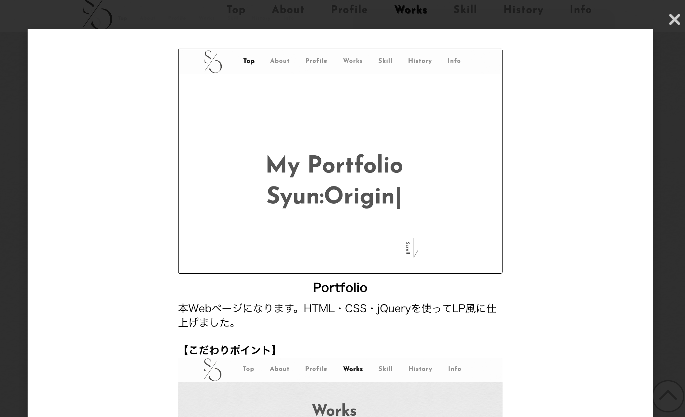
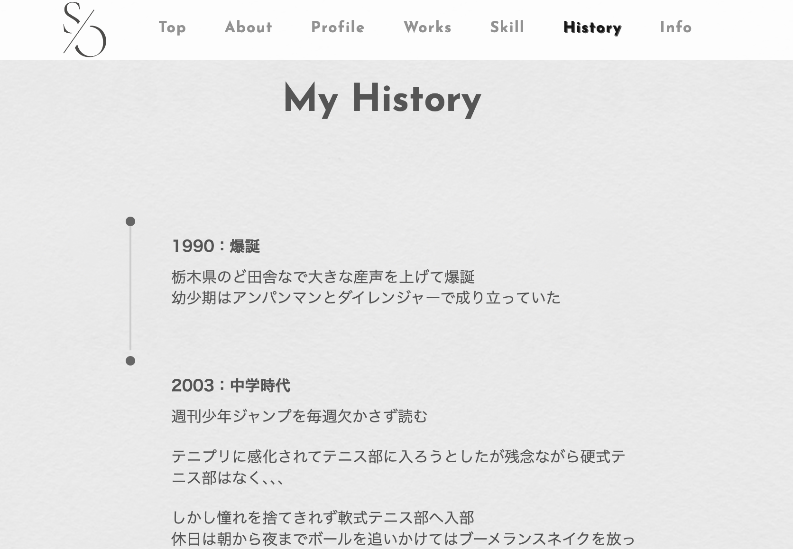
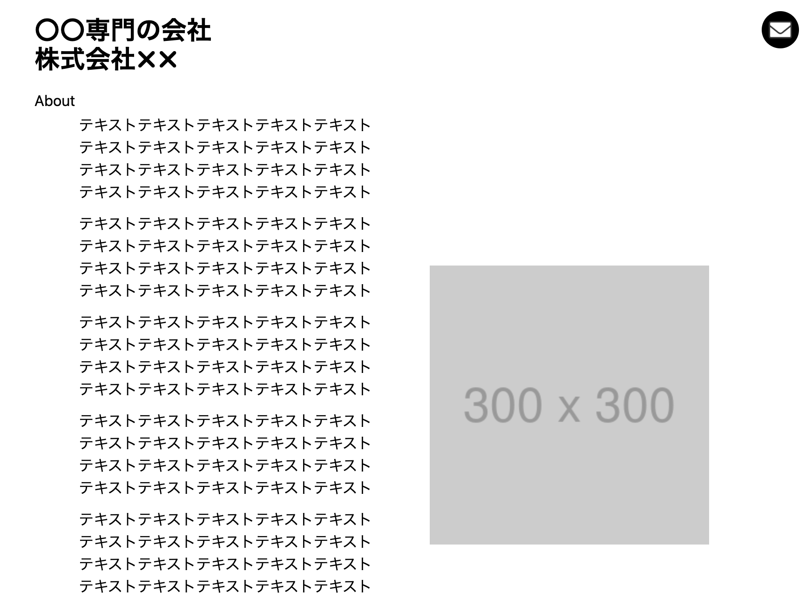
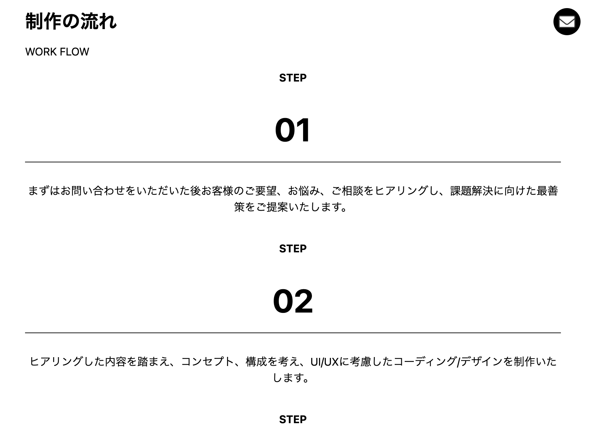
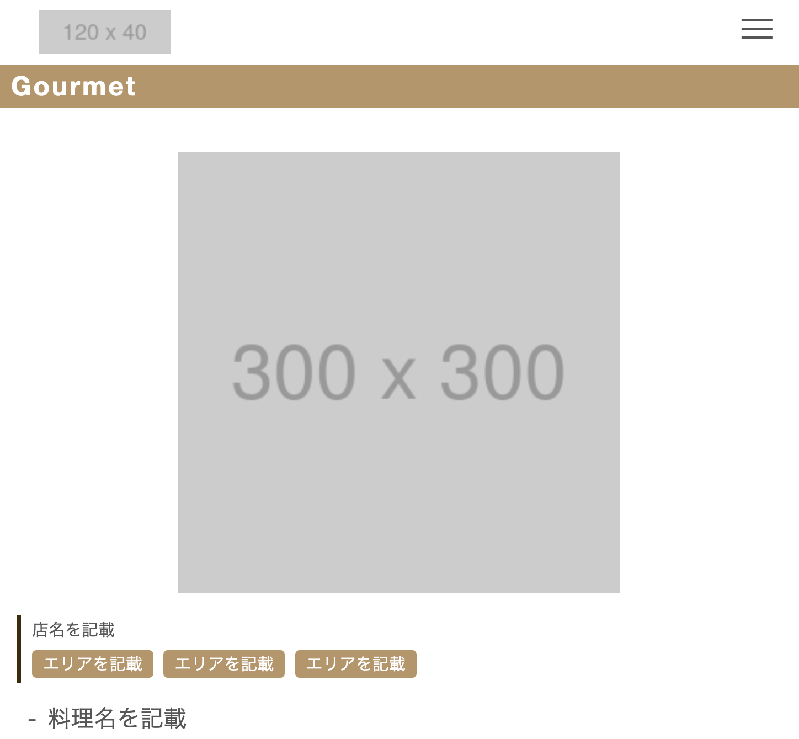
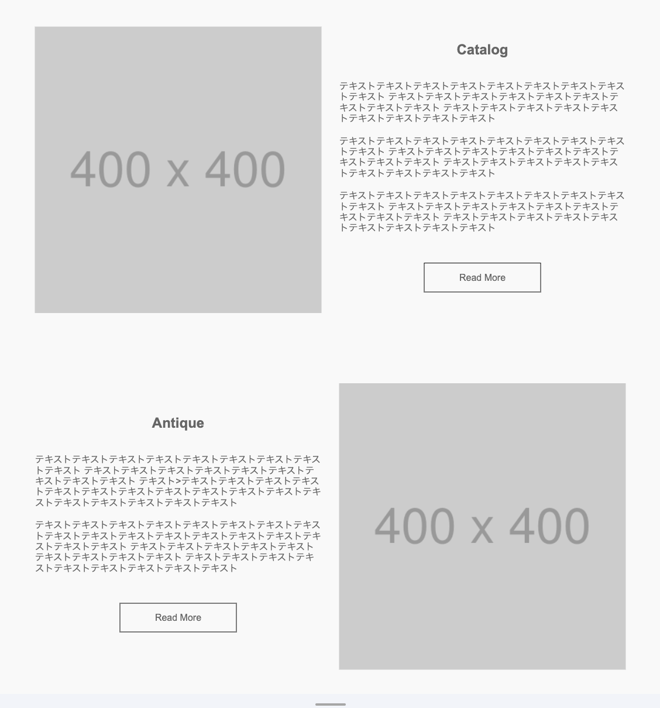

My Portfolio Syun:Origin
About
このサイトはしゅんのポートフォリオサイトです。
活動内容や制作実績、学習したスキルについてまとめています。
わたしのことをもっと知ってもらいたく、ポートフォリオ作成をはじめました。
お時間の許す限りゆっくりとご覧ください。
Profile

3歳の息子に溺愛中の30代パパです！
高校・大学と工学科に進み、生産技術として5年従事
その後フリーランスでWebライターを3年ほど経験
御縁があり営業職を3年続けていましたが、ずっと気になっていたプログラミングに未経験からチャレンジすることに
人生1度きり！気になったことにはチャレンジしてみるをモットーに、日々奮闘しております！！！
趣味はお酒(飲むだけ)と身体を動かすこと(実際には見る専門)です！
Works
Portfolio
本Webページになります。HTML・CSS・jQueryを使ってLP風に仕上げました。
【こだわりポイント】
Worksセクション
詳細をモーダルウィンドウで表示。各実績の詳細を別ページで表示させることで、セクション自体のエリアをコンパクトに
Historyセクション
スクロール位置に応じて追走する線を表示。追走することで本セクションを最後まで見てもらえるように
作成時間:35時間
使用言語:HTML,CSS,JavaScript,jQuery
【架空サイトA】
知人のコーポレートサイトを参考に模写しました
【こだわりポイント】
aboutセクション
flowセクション
作成時間:4〜5時間
使用言語:HTML,CSS
【架空サイトB】
Youtubeにて学習しながら模写したサイトです
【こだわりポイント】
aboutセクション
作成時間:3〜4時間
使用言語:HTML,CSS
【架空サイトC】
Webサイトにて模写したサイトです
【こだわりポイント】
aboutセクション
作成時間:3〜4時間
使用言語:HTML,CSS
Skill Set
HTML
%
簡易的なWebページなら対応可能
参考文献
･1冊ですべて身につくHTML&CSSとWebデザイン入門講座
･HTML5/CSS3モダンコーディング
CSS
%
簡易的なWebページなら対応可能
参考文献
･CSS設計完全ガイド
･Web開発者のためのCSS設計の教科書
･1冊ですべて身につくHTML&CSSとWebデザイン入門講座
･HTML5/CSS3モダンコーディング
JavaScript
%
書籍を読みながら勉強中
参考文献
･確かな力が身につくJavaScript「超」入門
JavaScript本格入門
jQuery
%
書籍を読みながら勉強中
参考文献
･確かな力が身につくJavaScript「超」入門
React.js
%
書籍を読みながら勉強中
参考文献
･React.js＆Next.js超入門
Next.js
%
書籍を読みながら勉強中
参考文献
･React.js＆Next.js超入門
Ruby
%
書籍を参考に勉強する予定
参考文献
･たのしいRuby
･プロを目指す人のためのRuby入門
My History
-
- 1990：爆誕
-
栃木県のど田舎なで大きな産声を上げて爆誕
幼少期はアンパンマンとダイレンジャーで成り立っていた
-
- 2003：中学時代
- 週刊少年ジャンプを毎週欠かさず読む
- テニプリに感化されてテニス部に入ろうとしたが残念ながら硬式テニス部はなく、、、
-
しかし憧れを捨てきれず軟式テニス部へ入部
休日は朝から夜までボールを追いかけてはブーメランスネイクを放っていた
-
- 2006：高校・大学時代
-
高校ではバンドをやったりコンビニバイトをやったり
初の8時間労働にて「足が棒になる」ことを実体験から学ぶ -
大学では 勉強＜＜＜＜バイト だった気がする
もしこのときの自分になにか言えるなら目標をもって勉強しろと言いたい - ただ3年続けた飲食店のバイト先で妻と出会ったことは唯一の救い
-
- 2013：生産技術職
-
･ 工程の進捗管理
･ 業務の効率化・最適化
･ 作業指示書
･ マニュアルの作成
といった業務を担当 -
休日出勤や残業はほぼなく、鬼ホワイト企業
だけどなんとなく同じような毎日を送ることにモヤモヤを感じていた珍しいパターン -
そんなときに自分で裁量をもって働いているフリーランスの存在を知る
いつかはフリーランスになろうと考えてブログを書き始めた
-
- 2018：Webライター
- ブログを書いてはいたもののなかなか収益化できないため、クラウドソーシングでライターを始める
-
･ 記事構成
･ キーワード選定
･ 執筆
･ WordPress入稿
といった一連業務を経験
メディアディレクターとしてライターさんの管理を担当 - とある企業様から声をかけていただき1ヶ月間の合宿型のセミナー講師を3回ほど引き受ける
-
Webライターをしている期間は千葉県のシェアハウスに住み、住人と意見交換やボードゲームをしていた
毎日を楽しみつつ刺激し合う関係の仲間ができた -
結婚とコロナのタイミングで地元へ戻り出産の準備をすることに
たまたま知人から営業職の話をいただき入社
-
- 2020：営業職
-
･ アタックリスト作成
･ 飛び込み営業
･ アフターフォロー
といった一連業務を担当 - 自社サービスを売買システムを利用してもらうため、競合他社との比較を伝えつつお客さまの問題を解決できるような営業スタイルを心掛けていた
- 業界・職種ともに未経験だったため学ぶことが多かったし、メンタルも鍛えられた気がする
-
- 2024：現在
- ずっと興味があったプログラミングに挑戦中
-
独学・未経験かつ家族がいるため不安は大きいが、逆に自分を追い込む理由にもなった
- 大きなリスクを伴うことを認めてくれた妻には感謝しかないし、息子はずーっとかわいい
- といったような経歴で現在に至るわけですが、これからももっとアクティブに生きていこうと日々奮闘しております！
Information
ここまでご覧いただきありがとうございました！
私のことを少しでも知っていただけたのなら嬉しいです。
もしこのサイトや私について何かありましたら、下記フォームからご連絡ください。
必須氏名
必須メールアドレス
必須お問い合わせ内容